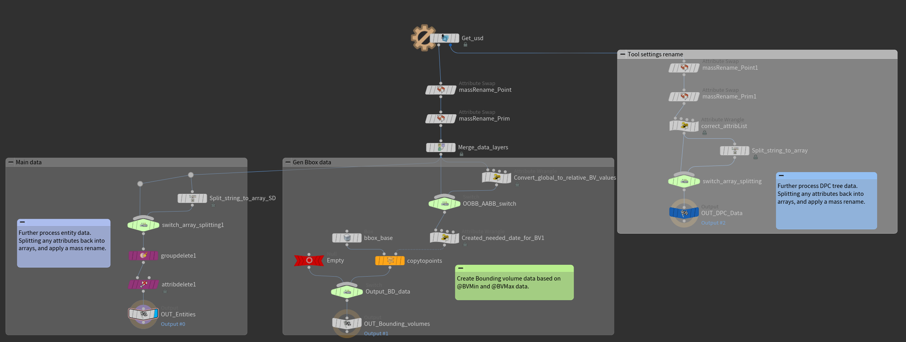
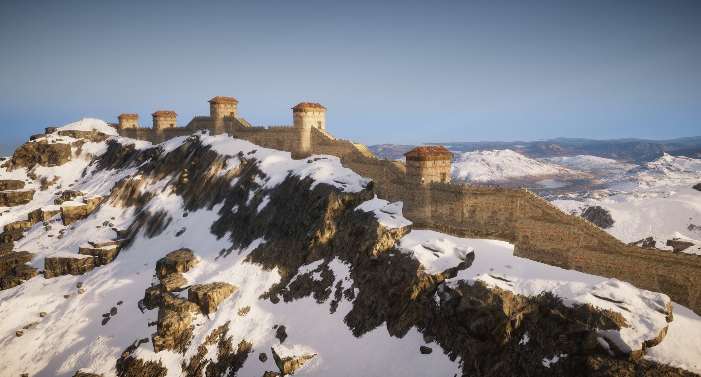
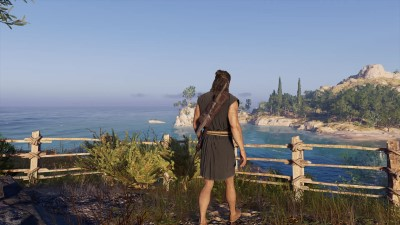
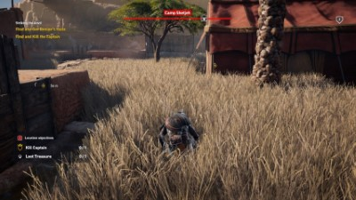
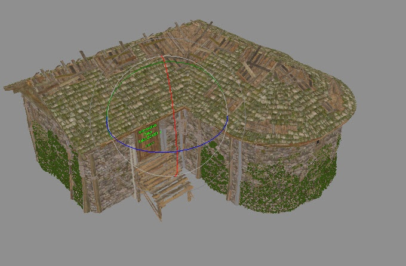

Ubisoft
Highlight
-
Anvil Pipeline core nodes
 Import and export nodes for procedural pipeline
-
City walls
 A tool to generate the Hadrian wall in England
Overview
At Ubisoft my initial work was creating procedural tools for the Assassins Creed franchise, in addition to occasionally assisting on other projects like Farcry 5. Tools ranged from smaller but still complex systems like Stalking zones (Dense bushes where the player can hide.) and Fences. Other more bigger tools are Cliff placement, City wall generation and flow map generations. Each with a different set of strict gameplay defined requirement.
Towards the end I switched to the Anvil pipeline team to assist in development of the new procedural pipeline. Creating the new Import and Export nodes on the Houdini side.
Additional projects and tools
Some other tools I worked on at Ubisoft include.
- Fences Places fences along a artist drawn spline. Fences needed to generate a continues looking fences but also work on slopes while now allowing for excessive rotation along the horizontal axis. 
- Terrain flow map Calculate the terrain flow map used by other system. The original system was lower resolution then needed, the main goal was to make it hight resolution while improving or keeping the cooking time the same.
- Staling zones Special areas with dense bushes for the player to hide in. The bush entities need form a clear border that follows the input curve, on top of regulating density for a dense feel without adding too many entities. 
- Rock collision A 3Ds max tool to convert a Lod 0 rock model into a valid collision mesh. The mesh needed to closely follow the original shape, be efficient in poly use but also have specific game play related features to assist in climbing. For example a 1m strip below ledges with a special No-Clim collision.
- Waterfalls A user friendly tool to quickly generate complex and unique looking water falls.
- Rock creation toolkit An evolution on the rock collision allowing for the creation of rocks in a similar way to Speed tree.
All Projects
-
Anvil Pipeline core nodes
Import and export nodes for procedural pipeline
-
City walls
A tool to generate the Hadrian wall in England
-
Space volumes detection
 Create valumes inside of buildings for sound distortion
-
Cliff generation
 Cliff generation and terrain stitching
Cliff generation and terrain stitching